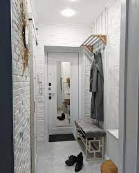
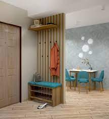
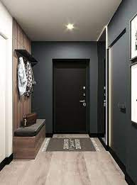
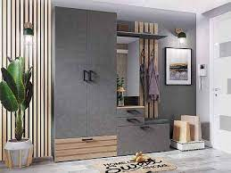

Прихожие
|  |
 |
 |
 |
| Прихожая "Ветланда" |
Прихожая "Соло-3" |
Прихожая "Данте" |
Прихожая "Амелия-2" |
| 15050 грн |
4535 грн |
9115 грн |
13460 грн |
Функциональность и удобство
Также мебель для прихожей должна быть очень функциональной и вместительной,
ведь именно в этом помещении мы храним массу нужных вещей и каждая из них может нам срочно понадобится.
Поэтому все наши прихожие снабжены множеством отделений для хранения верхней одежды, обуви,
головных уборов, а также различной мелочи, например, зонтов, наборов для шитья и чистки обуви.
Такое тщательное конструирование поможет вам без усилий поддерживать в
прихожей порядок и быстро находить вещи на своих местах.
На главную